전기공사기사 (2004-03-07 기출문제)
1과목: 전기응용 및 공사재료
1. 피복 아크 용접에서 용접봉이 녹아 용융지에 들어가는 것을 무엇이라 하는가?
- 용입
- 용착
- 용집
- 용제
(정답률: 51%)

2. down-light의 일종으로 아래로 조사되는 구멍을 적게 하거나 렌즈를 달아 복도에 집중 조사되도록 한 조명은?
- pin hole light
- coffer light
- line light
- cornis light
(정답률: 80%)
3. 다음 금속덕트에 대한 설명 중 틀리게 설명한 것은?
- 금속덕트에 사용하는 철판의 두께는 1.2[mm]이상으로 견고하게 제작한다.
- 덕트내면에는 전선을 손상할만한 돌기가 없어야 한다.
- 접속단자는 덕트내에 만든다.
- 덕트의 전면에 산화방지에 필요한 도장을 한다.
(정답률: 69%)
4. 가스를 넣은 전구에서의 질소대신 아르곤을 사용한 이유는?
- 값이 싸다.
- 열의 전도율이 크다.
- 열의 전도율이 작다.
- 비열이 적다.
(정답률: 56%)
5. 녹 아웃 펀치와 같은 목적으로 사용하는 공구의 명칭은?
- 리이머
- 히키
- 드라이브 이트
- 호울소우
(정답률: 78%)
6. 알카리 축전지에서 소결식에 해당하는 초급방전형의 형은?
- AM 형
- AMH 형
- AL 형
- AH - S형
(정답률: 81%)
7. 전지에서 자체 방전 현상이 일어나는 것은 다음 중 어느 것과 가장 관련이 있는가?
- 전해액 농도
- 전해액 온도
- 이온화 경향
- 불순물
(정답률: 70%)
8. 회전하고 있는 3상 유도전동기를 최대한 급속히 정지 시킬수 있는 제동법은?
- 역상제동
- 와전류제동
- 발전제동
- 회생제동
(정답률: 83%)
9. 콘크리트주의 길이가 12[m] 근가의 길이가1.2[m]일때 근가와 설치용 U-Bolt(경X길이)의 표준은?
- 270X500
- 320X550
- 330X560
- 360X590
(정답률: 48%)
10. 강재의 표면담금질에 쓰이는 가열방식은?
- 유도 가열
- 유전 가열
- 저항 가열
- 아크 가열
(정답률: 66%)
11. 단로기의 구조에서 관계가 없는 것은?
- 플레이트
- 리클로저
- 베이스
- 핀치
(정답률: 84%)
12. 열차의 자중이 100[t]이고,동륜상의 중량이 75[t]인 기관차의 최대 견인력[kg]은? (단,궤조의 점착계수는 0.2로 한다)
- 7500
- 10000
- 15000
- 20000
(정답률: 80%)
13. 코오드선에 있어서 고무코드선의 4심선 색깔은?(관련 규정 개정전 문제로 여기서는 기존 정답인 3번을 누르면 정답 처리됩니다. 자세한 내용은 해설을 참고하세요.)
- 흑,백,적,황
- 흑,백,적,청
- 흑,백,적,녹
- 흑,백,적,회
(정답률: 54%)
14. 위상제어를 하지 않은 단상 반파 정류 회로에서 소자의 전압 강하를 무시할 때 직류 평균값 Ed는? (단, E:직류 권선의 상전압 (실효값)이다.)
- 0.45E
- 0.90E
- 1.17E
- 1.46E
(정답률: 80%)
15. 볼소켓형 현수애자 및 취부금구에서 부속금구류가 아닌것은?
- 인류 스트랍
- 앵커쇄클
- 볼쇄클
- 볼 크레비스
(정답률: 61%)
16. 백열 전구의 필라멘트 재료의 구비조건에서 잘못된 것은?
- 용융점이 높을 것
- 고유저항이 클 것
- 높은 온도에서 증발이 적을 것
- 선팽창계수가 높을 것
(정답률: 76%)
17. 재료중 저항률이 가장 큰 것은?
- 백금
- 텅스텐
- 납
- 마그네슘
(정답률: 54%)
18. 형광체가 발산하는 복사의 파장은 조사된 복사의 파장보다 항상 길다는 법칙은?
- 플랭크의 법칙
- 스테판볼쯔만의 법칙
- 스토크의 법칙
- 빈의 변위법칙
(정답률: 62%)
19. 다음 등 중에서 방전등이 아닌 것은?
- 저압나트륨 등
- 할로겐등
- 형광수은등
- EL 등
(정답률: 72%)
20. 전선재료로서 구비조건이 틀린것은?
- 도전율이 클것
- 접속이 쉬울것
- 내식성이 클것
- 인장 강도가 작을것
(정답률: 84%)
2과목: 전력공학
21. 가스터빈 발전의 장점은?
- 효율이 가장 높은 발전방식이다.
- 기동시간이 짧아 첨두부하용으로 사용하기 용이하다.
- 어떤 종류의 가스라도 연료로 사용이 가능하다.
- 장기간 운전해도 고장이 적으며, 발전효율이 높다.
(정답률: 8%)
22. 3본의 송전선에 동상의 전류가 흘렀을 경우 이 전류를 무슨 전류라 하는가?
- 영상전류
- 평형전류
- 단락전류
- 대칭전류
(정답률: 9%)
23. 가공송전선로를 가선할 때에는 하중조건과 온도조건을 고려하여 적당한 이도(dip)를 주도록 하여야 한다. 다음 중 이도에 대한 설명으로 옳은 것은?
- 이도가 작으면 전선이 좌우로 크게 흔들려서 다른 상의 전선에 접촉하여 위험하게 된다.
- 전선을 가선할 때 전선을 팽팽하게 가선하는 것을 이도를 크게 준다고 한다.
- 이도를 작게 하면 이에 비례하여 전선의 장력이 증가되며, 너무 작으면 전선 상호간이 꼬이게 된다.
- 이도의 대소는 지지물의 높이를 좌우한다.
(정답률: 13%)
24. 초고압용 차단기에서 개폐저항기를 사용하는 이유는?
- 개폐써지 이상전압 억제
- 차단전류 감소
- 차단속도 증진
- 차단전류의 역률 개선
(정답률: 9%)
25. 단상 교류회로에 3150/210V의 승압기를 60kW, 역률 0.8인 부하에 접속하여 전압을 상승시키는 경우에 몇 kVA 의 승압기를 사용해야 적당한가? (단, 전원전압은 2900V 이다.)
- 3
- 5
- 7
- 10
(정답률: 6%)
26. 정전압 송전방식에서 전력원선도를 그리려면 무엇이 주어져야 하는가?
- 송수전단 전압, 선로의 일반회로 정수
- 송수전단 역률, 선로의 일반회로 정수
- 조상기 용량, 수전단 전압
- 송전단 전압, 수전단 전류
(정답률: 6%)
27. 그림과 같은 회로에서 4단자 정수 A, B, C, D 는? (단, Es, Is는 송전단 전압, 전류이고, ER, ＩR는 수전단전압, 전류, Y는 병렬 어드미턴스이다.)
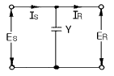
- A =1, B =0, C =Y, D =1
- A =1, B =Y, C =0, D =1
- A =1, B =Y, C =1, D =0
- A =1, B =0, C =0, D =1
(정답률: 11%)
28. 저압 뱅킹방식의 장점이 아닌 것은?
- 전압강하 및 전력손실이 경감된다.
- 변압기 용량 및 저압선 동량이 절감된다.
- 부하 변동에 대한 탄력성이 좋다.
- 경부하시의 변압기 이용 효율이 좋다.
(정답률: 9%)
29. 어떤 선로의 양단에 같은 용량의 소호리액터를 설치한 3상 1회선 송전선로에서 전원측으로부터 선로길이의 1/4지점에 1선지락고장이 발생했다면 영상전류의 분포는 대략 어떠한가?
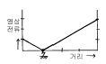
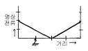
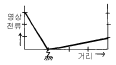
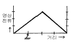
(정답률: 5%)
30. 부하역률이 cosθ인 경우의 배전선로의 전력손실은 같은 크기의 부하전력으로 역률이 1 인 경우의 전력 손실에 비하여 몇 배인가?
- 1/cos2θ
- 1/cosθ
- cosθ
- cos2θ
(정답률: 12%)
31. 직접접지방식이 초고압 송전선에 채용되는 이유 중 가장 적당한 것은?
- 지락고장시 병행 통신선에 유기되는 유도전압이 작기 때문에
- 지락시의 지락전류가 적으므로
- 계통의 절연을 낮게 할 수 있으므로
- 송전선의 안정도가 높으므로
(정답률: 10%)
32. 변전소에서 비접지 선로의 접지보호용으로 사용되는 계전기에 영상전류를 공급하는 것은?
- CT
- GPT
- ZCT
- PT
(정답률: 13%)
33. 송배전 선로에서 도체의 굵기는 같게 하고 경간을 크게 하면 도체의 인덕턴스는?(오류 신고가 접수된 문제입니다. 반드시 정답과 해설을 확인하시기 바랍니다.)
- 커진다.
- 작아진다.
- 변함이 없다.
- 도체의 굵기 및 경간과는 무관하다.
(정답률: 6%)
34. 주상변압기의 2차측 접지공사는 어느 것에 의한 보호를 목적으로 하는가?
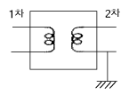
- 2차측 단락
- 1차측 접지
- 2차측 접지
- 1차측과 2차측의 혼촉
(정답률: 11%)
35. 특유속도가 큰 수차일수록 발생되는 현상으로 옳은 것은?
- 회전자의 주변속도가 대단히 작아진다.
- 회전수가 커진다.
- 저낙차에서는 사용할 수 없다.
- 경부하에서 효율의 저하가 심하다.
(정답률: 6%)
36. 동일한 조건하에서 3상 4선식 배전선로의 총 소요전선량은 3상 3선식의 것에 비해 몇 배정도로 되는가? (단, 중성선의 굵기는 전력선의 굵기와 같다고 한다.)
- 1/3
- 3/4
- 3/8
- 4/9
(정답률: 8%)
37. 포오밍(foaming)의 원인은?
- 과열기의 손상
- 냉각수의 불순물
- 급수의 불순물
- 기압의 과대
(정답률: 10%)
38. 피뢰기의 제한전압이 728kV이고 변압기의 기준충격절연 강도가 1040kV 라고 하면 보호 여유도는 약 몇 % 정도 되는가?
- 31
- 38
- 43
- 47
(정답률: 10%)
39. 설비 A가 150kW, B가 350kW, 수용률이 각각 0.6 및 0.7일 때 합성최대전력이 279kW이면 부등률은?
- 1.1
- 1.2
- 1.3
- 1.4
(정답률: 8%)
40. 케이블을 부설한 후 현장에서 절연내력시험을 할 때 직류를 사용하는 이유로 가장 적당한 것은?(오류 신고가 접수된 문제입니다. 반드시 정답과 해설을 확인하시기 바랍니다.)
- 절연 파괴시까지의 피해가 적다.
- 절연내력은 직류가 크다.
- 시험용 전원의 용량이 적다.
- 케이블의 유전체손이 없다.
(정답률: 10%)
3과목: 전기기기
41. 유도 전동기의 슬립(slip) S 의 범위는?
- 1 > S > 0
- 0 > S >-1
- 2 > S > 1
- -1 < S < 1
(정답률: 12%)
42. 정격전압이 같은 A,B 두대의 단상변압기를 병렬로 접속하여 360[KVA]의 부하를 접속하였다. A변압기는 용량 100[KVA], 퍼센트 임피던스 5[%], B변압기는 300[KVA], 퍼센트임피던스 3[%]이다. B변압기의 분담부하는 몇[KVA] 인가? (단, 변압기의 저항과 리액턴스의 비는 모두 같다.)
- 260
- 280
- 290
- 300
(정답률: 7%)
43. 제어 정류기의 역률제어 방법중 대칭각 제어기법의 내용이 아닌 것은?
- 출력측이나 입력측에 고조파 성분 적음
- 스위치에 대한 제어신호는 삼각파와 기준전압을 비교
- 삼각파의 위상은 입력전압의 위상과 동일하도록 제어
- 입력전압과 입력전류는 동일위상이 되어 역율이 높음
(정답률: 5%)
44. 2상 서어보 모타를 구동하는데 필요한 2상 전압을 얻는 방법으로 널리 쓰이는 방법은?
- 여자권선에 리액터를 삽입하는 방법
- 증폭기내에서 위상을 조정하는 방법
- 환상 결선 변압기를 이용하는 방법
- 2상 전원을 직접 이용하는 방법
(정답률: 5%)
45. 권수비 70인 단상변압기의 전부하 2차전압 200[V], 전압 변동률 4[%]일 때 무부하시 1차 단자전압은?
- 14560
- 13261
- 12360
- 11670
(정답률: 11%)
46. 극수 8, 중권직류기의 전기자 총 도체수 960, 매극 자속 0.04[wb], 회전수 400[rpm]이라면 유기 기전력은 몇[V]인 가 ?
- 625
- 425
- 327
- 256
(정답률: 7%)
47. 다음은 IGBT에 관한 설명이다. 잘못된 것은?
- Insulated Gate Bipolar Thyristor의 약자이다.
- 트랜지스터와 MOSFET를 조합한 것이다.
- 고속 스위칭이 가능하다.
- 전력용 반도체 소자이다.
(정답률: 11%)
48. 변압기의 전압 변동율에 대한 설명 중 잘못된 것은?
- 일반적으로 부하변동에 대하여 2차 단자 전압의 변동이 작을수록 좋다.
- 전부하시와 무부하시의 2차 단자 전압의 차이를 나타내는 것이다.
- 전압 변동율은 전등의 광도, 수명 전동기의 출력 등에 영향을 주는 중요한 특성이다.
- 인가 전압이 일정한 상태에서 무부하 2차 단자 전압에 반비례한다.
(정답률: 8%)
49. 직류기의 전기자에 사용되는 권선법은 ?
- 단층권
- 2층권
- 환상권
- 개로권
(정답률: 12%)
50. 2회전자계설에 의하여 단상 유도전동기의 가상적 2개의 회전자중 정방향에 회전하는 회전자 슬립이 S 이면 역방향에 회전하는 가상적 회전자의 슬립은 어떻게 표시되는가?
- 1 + S
- 1 - S
- 2 - S
- 3 - S
(정답률: 10%)
51. 정전압 계통에 접속된 동기발전기는 그 여자를 약하게 하면?
- 출력이 감소한다.
- 전압이 강하한다.
- 앞선 무효전류가 증가한다.
- 뒤진 무효전류가 증가한다.
(정답률: 8%)
52. 어떠한 변압기에서 무유도 전부하의 효율은 97.0[%],그 전압변동율은 2.0[%]라 한다. 그 최대효율[%]은?
- 약 93
- 약 95
- 약 97
- 약 99
(정답률: 7%)
53. 동기전동기의 제동권선의 효과는?
- 정지시간의 단축
- 토크의 증가
- 기동토크의 발생
- 과부하 내량의 증가
(정답률: 9%)
54. 동기 전동기의 진상전류는 어떤 작용을 하는가?
- 증자작용
- 감자작용
- 교차자화작용
- 아무작용도 없다.
(정답률: 13%)
55. 출력 4[KW] 1400[rpm]인 전동기의 토크는 얼마인가?
- 26.5[Kg-m]
- 2.65[Kg-m]
- 2.79[Kg-m]
- 27.9[Kg-m]
(정답률: 13%)
56. 동기 와트로 표시되는 것은?
- 1차 입력
- 출력
- 동기속도
- 토크
(정답률: 5%)
57. 50[Hz], 슬립 0.2 인 경우의 회전자 속도가 600[rpm]인 3상 유도전동기의 극수는?
- 16
- 12
- 8
- 4
(정답률: 9%)
58. 3상 교류 동기 발전기를 정격 속도로 운전하고 무부하 정격전압을 유기하는 계자전류를 i1, 3상 단락에 의하여 정격전류 Ｉ를 유기하는 계자전류를 i2라 할때 단락비는?
- Ｉ/i1
- i2/i1
- Ｉ/i2
- i1/i2
(정답률: 9%)
59. 브러시를 중성축에서 이동시키는 것은?
- 로커
- 피그테일
- 호울더
- 라이저
(정답률: 8%)
60. 3상 4극 220[V]인 유도 전동기의 권선이 2병렬 델타(△×2)결선으로 되어 있다. 결선을 고쳐 3상 380[V]로 사용하려면 다음중 옳은 것은?
- △×1
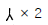
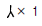
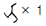
(정답률: 6%)
4과목: 회로이론 및 제어공학
61. 림과 같은 회로에서 i1=Ｉm sin ωt[A]일때 개방된 2차 단자에 나타나는 유기 기전력 V2는 얼마인가?
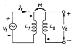
- ωMsinωt [V]
- ωMcosωt [V]
- ωMＩmsin(ωt-90°)[V]
- ωMＩmsin(ωt+90°)[V]
(정답률: 10%)
62.
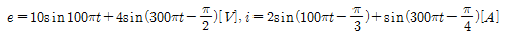
라고 하면 이 사이의 전력은 몇[W]인가?- 12.828
- 6.414
- 24
- 8.586
(정답률: 11%)
63. 2차 시스템의 감쇠율(damping ratio) δ가 δ < 1 이면 어떤 경우인가?
- 비감쇠
- 과감쇠
- 발산
- 부족감쇠
(정답률: 15%)
64.
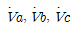
3상 전압일때 역상전압은? (단,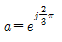
)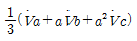
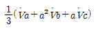
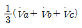
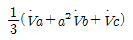
(정답률: 16%)
65. Z = 8+j6[Ω] 평형 Y부하에 선간전압 200[V]인 대칭 3상 전압을 인가할 때 선전류[A]는?
- 5.5
- 7.5
- 10.5
- 11.5
(정답률: 11%)
66. 잔류편차(OFF SET)을 일으키는 제어는?
- 비례제어
- 미분제어
- 적분제어
- 비례적분미분제어
(정답률: 14%)
67. 이산 시스템(discrete data system)에서의 안정도 해석에 대한 아래의 설명 중 맞는 것은?
- 특성방정식의 모든 근이 z 평면의 음의 반평면에 있으면 안정하다.
- 특성방정식의 모든 근이 z 평면의 양의 반평면에 있으면 안정하다.
- 특성방정식의 모든 근이 z 평면의 단위원 내부에 있으면 안정하다.
- 특성방정식의 모든 근이 z 평면의 단위원 외부에 있으면 안정하다.
(정답률: 12%)
68. 그림 (a)를 그림 (b)와 같은 등가 전류원으로 변환할 때 Ｉ[A] 와 R[Ω] 은?
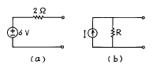
- Ｉ = 6, R = 2
- Ｉ = 3, R = 5
- Ｉ = 4, R = 0.5
- Ｉ = 3, R = 2
(정답률: 10%)
69. 신호 흐름 선도를 단순화 하면?
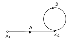
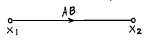
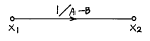
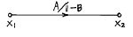
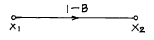
(정답률: 13%)
70. 특성방정식이 S3 + 2S2 + Ks +10 = 0로 주어지는 제어계가 안정하기 위한 K의 값은?
- K > 0
- K > 5
- K < 0
- 0 < K < 5
(정답률: 11%)
71. 특성방정식이 S3 + S2 + S = 0일 때 이 계통은?
- 안정하다.
- 불안정하다.
- 조건부 안정이다.
- 임계상태이다.
(정답률: 9%)
72. 그림의 게이트(gate)명칭은 어떻게 되는가?
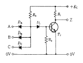
- AND gate
- OR gate
- NAND gate
- NOR gate
(정답률: 13%)
73. 다음과 같은 블록선도에서 등가 합성 전달함수 C/R는?
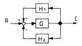
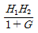
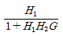
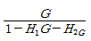
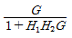
(정답률: 10%)
74. 과도응답의 소멸되는 정도를 나타내는 감쇠비(decay ratio)는?
- 최대오우버슈우트/제2오우버슈우트
- 제3오우버슈우트/제2오우버슈우트
- 제2오우버슈우트/최대오우버슈우트
- 제2오우버슈우트/제3오우버슈우트
(정답률: 11%)
75. R-L-C 직렬회로에서 직류전압 인가시
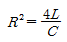
일때의 상태는?- 진동 상태
- 비진동 상태
- 임계상태
- 정상상태
(정답률: 14%)
76. 무손실 선로에 있어서 감쇠정수 α, 위상정수를 β 라 하면 α 와 β 의 값은? (단, R, G, L, C는 선로 단위 길이당의 저항, 콘덕턴스, 인덕턴스, 커패시턴스이다.)
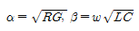
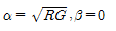
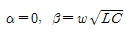
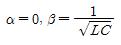
(정답률: 10%)
77.
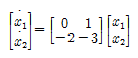
로 표현되는 시스템의 상태 천이행렬 (state-transition matrix)ф(t)를 구하시오.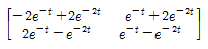
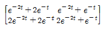
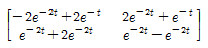
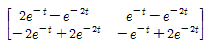
(정답률: 7%)
78. 4단자정수가 각각
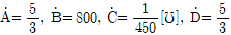
일때, 전달정수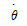
는 얼마인가?- loge 5
- loge 4
- loge 3
- loge 2
(정답률: 10%)
79. 개루프 전달함수
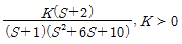
일 때 점근선의 실수축과의 교차점은?- -1
- -1.5
- -2
- -2.5
(정답률: 7%)
80. f(t)=e-2tcos3t의 라플라스 변환은?
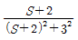
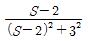
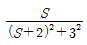
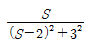
(정답률: 11%)
5과목: 전기설비기술기준 및 판단기준
81. 사용전압 154000V의 가공전선을 시가지에 시설하는 경우 전선의 지표상의 높이는 최소 몇 m 이상이어야 하는가?
- 7.44
- 9.44
- 11.44
- 13.44
(정답률: 7%)
82. 특별고압 전로와 비접지식 저압 전로를 결합하는 변압기로서 그 특별고압 권선과 저압 권선간에 금속제의 혼촉방지판이 있고 또한 그 혼촉방지판에 제2종 접지공사를 한것에 접속하는 저압전선을 옥외에 시설할 때의 시설방법으로 옳지 않은 것은?
- 저압 전선은 1구내에만 시설할 것
- 저압 가공 전선로 또는 저압 옥상 전선로의 전선은 케이블일 것
- 저압 가공 전선과 케이블이 아닌 특별고압의 가공 전선은 동일 지지물에 시설하지 아니할 것
- 저압 전선의 구외에의 연장 범위는 반드시 200m 이하 일 것
(정답률: 7%)
83. 터널내의 전선로의 시설방법으로 옳지 않은 것은?
- 저압 전선은 지름 2.0mm의 경동선이나 이와 동등 이상의 세기 및 굵기의 절연전선을 사용하였다.
- 고압 전선은 케이블공사로 하였다.
- 저압 전선을 애자사용공사에 의하여 시설하고 이를 궤조면상 또는 노면상 2.5m 이상으로 하였다.
- 저압 전선을 가요전선관공사에 의해 시설하였다.
(정답률: 7%)
84. 사용전압 400V 미만의 이동전선으로 목욕탕에 시설하여 사용되는 것은?
- 면절연전선
- 고무절연전선
- 면코드
- 방습코드
(정답률: 10%)
85. 변전소 또는 이에 준하는 곳에 사용되는 특별고압용변압기의 계측장치로 반드시 시설하여야 하는 것은?
- 절연
- 용량
- 유량
- 온도
(정답률: 9%)
86. 전력보안 통신설비인 무선용 안테나 등을 지지하는 철주, 철근콘크리트주 또는 철탑의 기초의 안전율은 얼마 이상 이어야 하는가?
- 1.2
- 1.5
- 1.8
- 2.0
(정답률: 8%)
87. 저압 옥내배선은 일반적인 경우, 지름 몇 mm 이상의 연동선이거나 이와 동등 이상의 세기 및 굵기의 것을 사용하여야 하는가?
- 1.6
- 2.0
- 2.6
- 3.2
(정답률: 1%)
88. 특별고압 지중전선이 가연성이나 유독성의 유체를 내포하는 관과 접근하기 때문에 상호간에 견고한 내화성의 격벽을 시설하였다. 상호간의 이격거리가 몇 m 이하인 경우인가?
- 0.4
- 0.6
- 0.8
- 1
(정답률: 9%)
89. 400V 미만의 저압 옥내배선을 할 때 점검할 수 없는 은폐 장소에 할 수 없는 배선공사는?
- 금속관공사
- 합성수지관공사
- 금속몰드공사
- 플로어덕트공사
(정답률: 7%)
90. 고압 및 특별고압의 전로에 절연내력시험을 하는 경우 시험전압을 연속하여 몇 분 동안 가하는가?
- 1분
- 5분
- 10분
- 30분
(정답률: 14%)
91. 시가지의 도로상에 시설하는 가공 직류 전차선로의 구분 개폐기는 몇 km 이하마다 시설하여야 하는가?
- 1.5
- 2
- 2.5
- 4
(정답률: 7%)
92. 옥내에 시설하는 관등회로의 사용전압이 1000V를 넘는 방전등공사에 사용되는 네온변압기의 외함에는 몇 종 접지공사를 하여야 하는가?
- 제1종접지공사
- 제2종접지공사
- 제3종접지공사
- 특별제3종접지공사
(정답률: 5%)
93. 변압기에 의하여 특별고압 전로에 결합되는 고압전로에 방전하는 장치를 그 변압기의 단자에 가까운 1극에 설치 하였다고 할 때, 이 방전장치의 접지저항은 몇 Ω 이하로 유지하여야 하는가?
- 10
- 30
- 50
- 100
(정답률: 10%)
94. 특별고압 전선로에 사용되는 애자장치에 대한 갑종 풍압 하중은 그 구성재의 수직투영면적 1m2에 대한 풍압하중을 몇 kgf 를 기초로 하여 계산한 것인가?
- 60
- 68
- 96
- 106
(정답률: 6%)
95. 고압 인입선을 다음과 같이 시설하였다. 시설기준에 맞지 않는 것은?
- 고압 가공인입선 아래에 위험표시를 하고 지표상 3.5m의 높이에 설치하였다.
- 1.5m 떨어진 다른 수용가에 고압 연접인입선을 시설 하였다.
- 횡단 보도교 위에 시설하는 경우 케이블을 사용하여 노면상에서 3.5m의 높이에 시설하였다.
- 전선은 5㎜ 경동선과 동등한 세기의 고압 절연전선을 사용하였다.
(정답률: 8%)
96. 저압의 옥측 배선을 시설 장소에 따라 시공할 때 적절 하지 못한 것은?
- 버스덕트공사를 철골조로 된 공장 건물에 시설
- 합성수지관공사를 목조로 된 건축물에 시설
- 금속몰드공사를 목조로 된 건축물에 시설
- 애자사용공사를 전개된 장소에 있는 공장 건물에 시설
(정답률: 9%)
97. 사용전압이 22900V인 특별고압 가공전선이 건조물 등과 접근상태로 시설되는 경우 지지물로 A종 철근콘크리트주를 사용하면 그 경간은 몇 m 이하이어야 하는가? (단, 중성선 다중접지식으로 전로에 지기가 생겼을 때에 2초이내에 자동적으로 이를 전로로부터 차단하는 장치가 되어있다고 한다.)
- 100
- 150
- 200
- 250
(정답률: 1%)
98. 가반형의 용접전극을 사용하는 아크용접장치의 용접변압기의 1차측 전로의 대지전압은 몇 V 이하이어야 하는가?
- 150
- 220
- 300
- 380
(정답률: 9%)
99. 옥내에 시설하는 전동기에는 과부하 보호장치를 시설하여야 하는데, 단상전동기인 경우에 전원측 전로에 시설하는 과전류차단기의 정격전류가 몇 A 이하이면 과부하 보호장치를 시설하지 않아도 되는가?
- 10
- 15
- 30
- 50
(정답률: 7%)
100. 저압용의 개별 기계기구에 전기를 공급하는 전로 또는 개별 기계기구에 전기용품안전관리법의 적용을 받는 인체 감전보호용 누전차단기를 시설하면 외함의 접지를 생략할 수 있다. 이 경우의 누전차단기의 정격이 기술 기준에 적합한 것은?
- 정격감도전류 15mA 이하, 동작시간 0.1초 이하의 전류 동작형
- 정격감도전류 15mA 이하, 동작시간 0.2초 이하의 전압 동작형
- 정격감도전류 30mA 이하, 동작시간 0.1초 이하의 전류 동작형
- 정격감도전류 30mA 이하, 동작시간 0.03초 이하의 전류 동작형
(정답률: 8%)